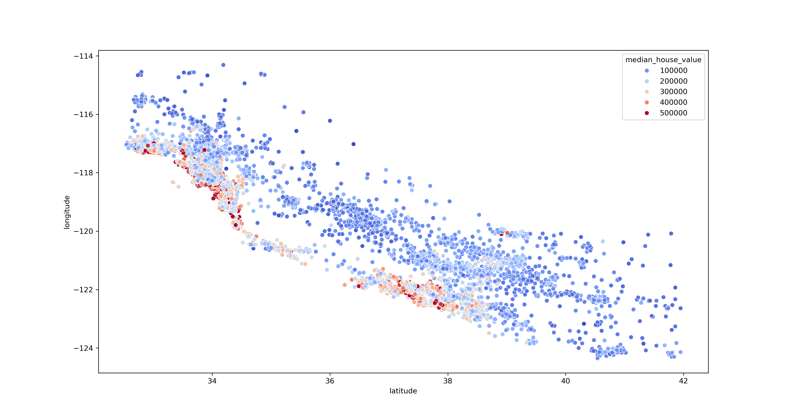
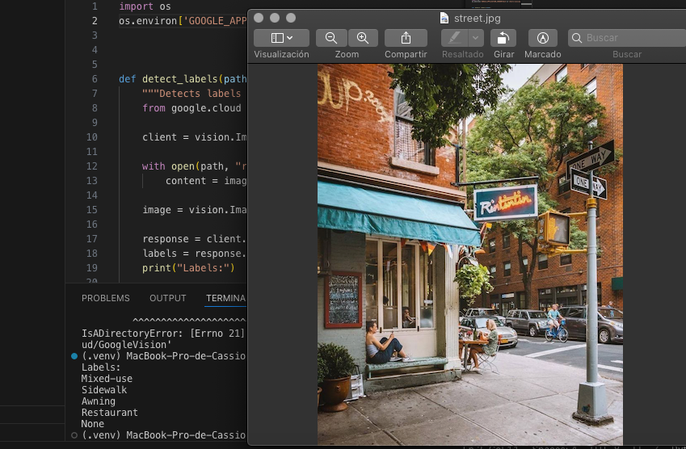

The objective of this project was to segment customers of a German bank into groups with similar behaviors using clustering techniques. This helps the bank understand its customers better and make more informed decisions about financial products they could offer them.
This type of analysis is crucial because it helps financial institutions better understand their customers and how they interact with their products. Instead of treating all customers the same way, clustering allows for the creation of specific segments that can be worked with more effectively. This not only improves customer relationships but also enhances profitability and operational efficiency for the bank.
This project uses a dataset of house prices based on various attributes such as location, number of rooms, and proximity to the beach in the state of California. Using machine learning techniques, we can build a predictive model for house prices based on their location.
In this code, we use Google's artificial intelligence to automate image labeling by identifying elements present in the image and generating a list of keywords for each one. This can be useful for improving image searchability, organizing large datasets, enhancing SEO for websites, and optimizing content for machine learning applications.
In this heat map, we visualize the distribution of traffic incidents in Mexico City over specific time intervals. It allows us to identify potentially dangerous areas that require attention and helps prevent future accidents.
This web application enhances the quality of low-resolution images using advanced artificial intelligence techniques. Through a simple interface, users can upload an image and obtain an upscaled version with improved detail and sharpness.
Technologies used:
How it works:
This project is ideal for restoring old images, scaling graphics in multimedia applications, and improving image quality in low-resolution environments.
In this interactive map, we visualize the results of the 2020 U.S. elections using a color-coded system, allowing us to check the percentage of votes for the Republican and Democratic parties.
This site was created with the Nicepage